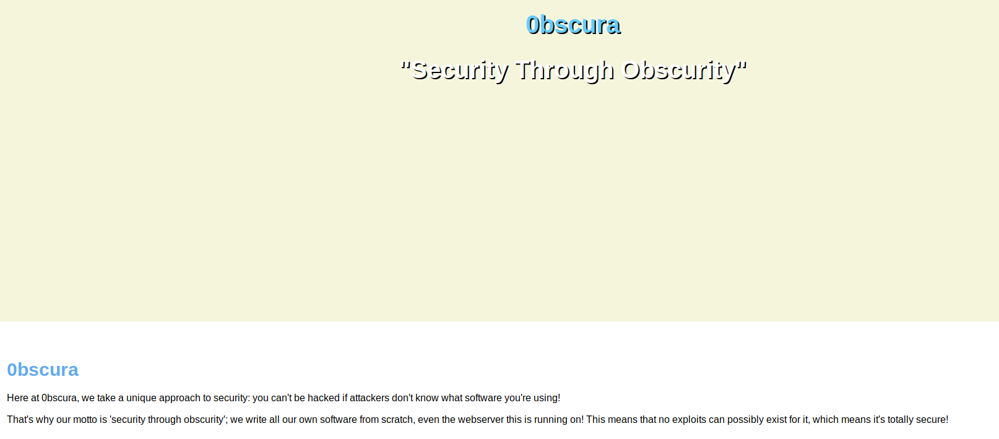
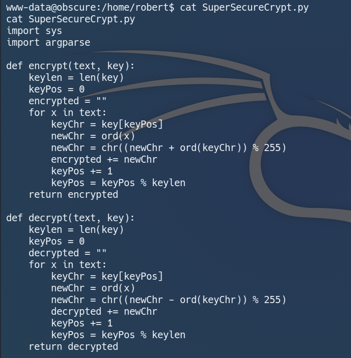

Introduction:
Hi guys, it's been a while since I last posted a writeup. As today is HBL day, I have some time to spare and decided to do a writeup on Obscurity.
Obscurity is a medium linux machine that is heavy on python and requires quite a lot of custom exploitations.
Its ip is 10.10.10.168 and I will add it to /etc/hosts as obscurity.htb.
Nmap:
Let's start with a nmap scan on our target:
Analysing our nmap result, we got ssh on port 22, http on port 80, http-proxy on port 8080 and cslistener on port 9000.
Let's start with web enumeration.
Web Enumeration:
We are unable to connect to http://obscurity.htb as the port is closed.
Let's check http://obscurity.htb:8080 instead.

We see a simple web page and a rather confident message.
Scrolling down further, we can find some more useful information:
We get some idea of the upcoming obstacles, and most importantly the path towards our foothold.
To view the source code of the website, we have to find it under some "secret development" directory.
Since we already know the name of the file we want, we can use this great tool called ffuf to find its directory.
ffuf:
I set the directory to "fuzz" and ran the tool.
ffuf is extremely fast, and we found the directory "develop" in under three minutes.
Navigating to http://obscurity.htb:8080/develop/SuperSecureServer.py, we get to read the source code of the website:
(...)The code is very long so I'm not pasting everything here.
Buttttttt now let's search to see if it contains any known dangerous functions.
exec():
Sure enough, I found this dangerous function exec().
As its name suggests, exec() allows users to execute commands.
Even better, it allows us to execute multiple commands separated by a semicolon.
Since we have the source code, we have the blueprint of how the web page will interact with its users.
Now let's try to get it to execute our commands.
exploit script:
I wrote a script to escape from the output formatting, execute our reverse shell, and follow through with a blank print statement to prevent errors.
As soon as I ran the script, I got a shell as www-data on the machine.
www-data is a low level user, and he is unable to read user.txt.
Let's look around and try to become a higher level user.
Getting User:
In the home directory, we found a user robert and his directory.
There are some interesting files in his directory:
Let's check the contents of each file.
check.txt, out.txt:
There is some sort of encryption on the text.
passwordreminder.txt:
Seems like robert left his encrypted password here.
SuperSecureCrypt.py:

Now we can clearly see the encryption algorithm used.
This method of encryption works by adding the chr() value of the original letter and the key letter together to form a new character.
To make things clearer:
We already have the encrypted text and the original text, so let's crack the key now!
keycracker:
I improvised on SuperSecureCrypt.py such that it can output the encryption key given two text files.
Then I ran it on the machine and it gave me the key, alexandrovich.
Now we can use SuperSecureCrypt.py to decrypt the password.
password:
Running the command python3 SuperSecureCrypt.py -i passwordreminder.txt -k alexandrovich -d -o /tmp/password.txt, we get the password SecThruObsFTW.
With his password, we can SSH as robert and read user.txt.
Getting Root:
We should always check our sudo privileges first.
We are able to run this python script BetterSSH.py as root.
Let's see what this script does.

So this script prompts us to input our username and password, checks them against /etc/shadow, and "logs us in" if successful.
What's interesting is that the script puts the contents of /etc/shadow in a randomly generated file under /tmp/SSH for a split second before removing it.
This is how it works:

Theoretically if we can copy the file before it gets removed, we can get root hash.
It is quite difficult to do manually, so let's write a script to do it for us.
exploit.sh:
I wrote a simple bash script that will copy every file in the directory /tmp/SSH to /tmp/shadow.
Then I made the directory /tmp/SSH and ran both scripts.
and we got root's hash!

Let's bring the hash to hashcat and try to crack it.
command: hashcat64 -m 1800 -O roothash.txt rockyou.txt
In a few seconds, hashcat cracked the hash, and we get the password mercedes.
Now we can BetterSSH as root with his password.
rooted~!
Conclusion:
Obscurity is truly a box like no others, in the sense that everything has to be done manually, and you really have to understand how the scripts work to get to the next step.
Every part of it was fun and well designed to me, and it allowed me to practise reading and understanding python code.
When I did the box previously, robert had write access to his directory, and I could simply create my own BetterSSH.py and execute it as root.
It seems like the creator had patched it this time and I had to do it the intended way, which was way more interesting lol.
That's all I have for Obscurity, and I hope to see you the next time!
oh and hope everyone is having fun during hbl ;)